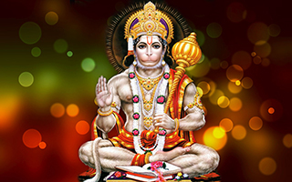

हम सभी, शब्दों को अपने विचार व्यक्त करने और हमारी जरूरतों को पूरा करनेए इस्तेमाल करते हैं,
एक दिन में करीब 15,000 शब्द बोलते हैं।
मंत्र एक ध्वनि, शब्दांश,शब्द या वाक्यांश है, जिसका उपयोग एक आध्यात्मिक अनुभव प्राप्त करने, एक लक्ष्य प्राप्त करने या खुद को बेहतर बनाने के लिए अनुष्ठान करते हैं।
हनुमान चालीसा एक मात्रा ऐसा मंत्र है जिसके सही अनुष्ठान से, आरोग्य ,वीर्य, धनराषि और मुक्ति प्राप्त होते हैं।
आइए हनुमान चालीसा जप से लाभ प्राप्त करने का सबसे अच्छा तरीका समझें
मंत्र एक ध्वनि, शब्दांश,शब्द या वाक्यांश है, जिसका उपयोग एक आध्यात्मिक अनुभव प्राप्त करने, एक लक्ष्य प्राप्त करने या खुद को बेहतर बनाने के लिए अनुष्ठान करते हैं।
हनुमान चालीसा एक मात्रा ऐसा मंत्र है जिसके सही अनुष्ठान से, आरोग्य ,वीर्य, धनराषि और मुक्ति प्राप्त होते हैं।
आइए हनुमान चालीसा जप से लाभ प्राप्त करने का सबसे अच्छा तरीका समझें
वैज्ञानिक अनुष्ठान विधि
ॐ हनुमते नमः।
1.आप जप करने से पहले अपनी मनोकामना के बारें में सोचे, और हनुमान जी से उसकी पूर्ति
की प्रार्थना करें। हम जो सोचते हैं और महसूस करते हैं वह एक शक्ति है, जो ब्रह्माण्ड से जुड़कर उसी तरह के घटनाओं और परिस्थितियों में हमें वापस आकर्षित करता है । यदि व्यक्ति सकारात्मक सोचता है और सकारात्मक महसूस करता है, तो वे सकारात्मक घटनाओं और परिस्थितियों को वापस आकर्षित करते हैं ।
इसीलिए यह जरूरी है की आप अपनी मनोकामना के बारे में स्पष्ट तरह से कल्पना करें, और हनुमान जी से उसकी पूर्ति की प्रार्थना करें।
इसे मंत्र का अनुष्ठान कहते हैं ।
2. आपको एक दिन में कम से कम एक बार हनुमान चालीसा का जप करना चाहिए ।
श्री तुलसीदास जी का कहना है कि, जब तक आप हनुमान चालीसा का १०० बार पठन पूरी करेंगे उससे पहले ही हनुमान जी संतुष्ट होकर आपको वर प्रदान करेंगे
जो सत बार पाठ कर कोई ।
छूटहि बन्दि महा सुख होई ॥३८॥
3. सुबह नहाने के बाद और रात में सोने से पहले
" ॐ नमो हनुमते नमः ॥"
बीज मंत्र का पठन करें. यह आप १८,२७,१०८ बार कर सकते है4. व्रत के पूरा समय आप शुद्ध शाकाहारी रहोगे तो अच्छा है, अगर आदत से मजबूर हैं तो मंगलवार और शनिवार मांसाहार त्याग दें ।
5.यदि आपको अज्ञात भय हो और रात में उनकी चिंता हो रही हो तो अपने हाथ और चेहरे को धो लें और चालीसा को एक बार पठन करें । सभी अज्ञात भय दूर हो जाएंगे।
आप के सभी मनोकामनाएं पूरी हों.
हनुमते नमः॥

हनुमान चालीसा के ५ बड़े लाभ।
हनुमान चालीसा गोस्वामी तुलसीदास जी की उल्लेखनीय काव्य रचनाओं में से एक है।
हनुमान चालीसा का हिंदू धर्म में एक विशेष स्थान एवं महत्त्व है।
ऐसा माना जाता है कि हनुमान चालीसा के जाप से पवनपुत्र हनुमान जी को शीघ्र संतुष्ट कर सकते हैं और उनका आशीर्वाद प्राप्त कर सकते हैं।
ऐसा माना जाता है कि हनुमान चालीसा के जाप से पवनपुत्र हनुमान जी को शीघ्र संतुष्ट कर सकते हैं और उनका आशीर्वाद प्राप्त कर सकते हैं।
जप से अधिकतम लाभ कैसे प्राप्त करें?
मंत्र पवित्र शब्द होते हैं और उनमें आपके जीवन को बदलने की शक्ति होती है।
वे एक बीज की तरह हैं जिसका नियमित रुप से जाप और प्रथा के साथ पोषण किया जाना चाहिए।
मंत्र का जाप आपकी चेतना को प्रभावित करने की एक सूक्ष्म प्रक्रिया है।
जानिये दुनिया के सबसे शक्तिशाली मंत्र का पाठ कैसे करें।
जानिये दुनिया के सबसे शक्तिशाली मंत्र का पाठ कैसे करें।